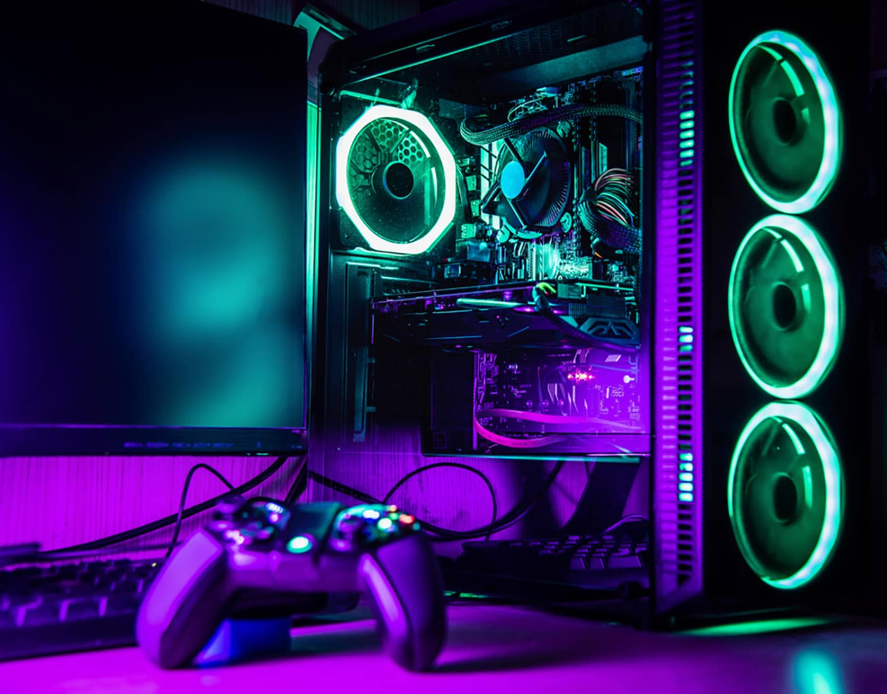
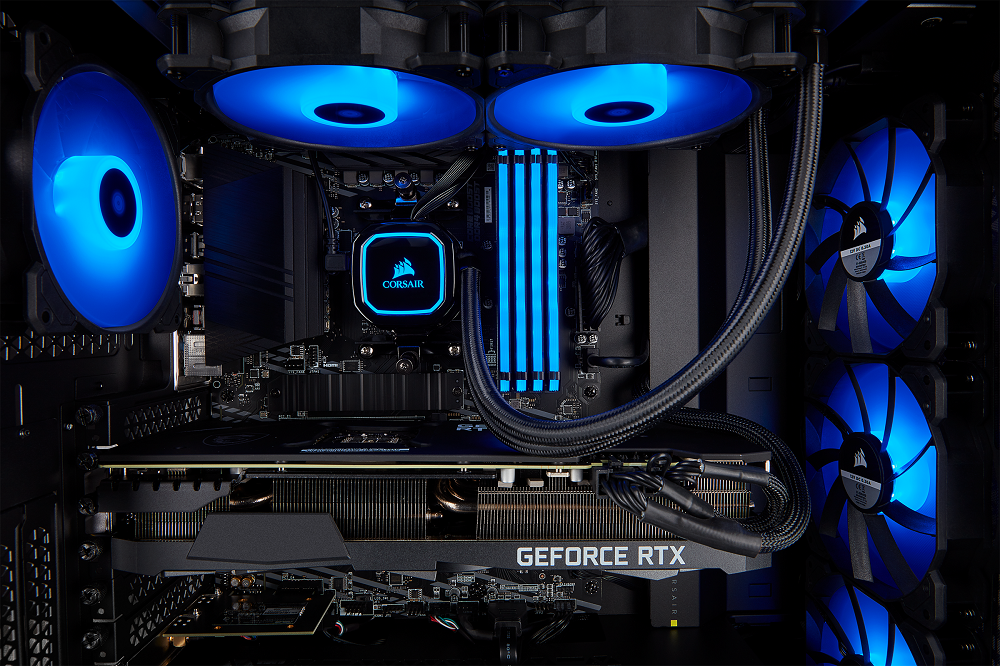

Autor:Diego Ameth Hernandez Hernandez
> ¿Que Es Una Tarjeta Grafica?
La tarjeta gráfica, también conocida como tarjeta de
video, es un componente electrónico que está integrado
en la placa base del ordenador, o que también puede instalarse después con la finalidad de aumentar la
capacidad del equipo.
Esta tarjeta logra procesar los datos provenientes del CPU y los transforma en información visual en un
dispositivo de salida, como un monitor.
¿Para Que Sirve Un GPU?
La tarjeta gráfica se encarga de procesar aquellos datos provenientes del procesador, entre imágenes y videos que se reproducen en la computadora. Es decir, la tarjeta de video sirve para que puedas disfrutar a lo grande de todos tus videojuegos, así como para utilizar aplicaciones para editar fotografías o videos, como Adobe Photoshop o Adobe Premiere. Últimamente, la tarjeta gráfica también ha sido relacionada con la acción de minar criptomonedas.
 